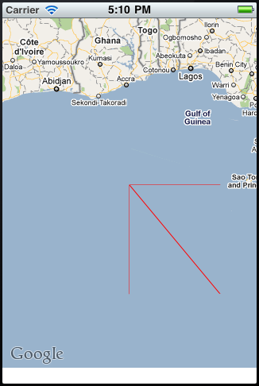

I was toying around with MapKit today and I am pretty sure I found a bug. MapKit renders an extra line along the equator if a polyline's point has a latitude of zero or an extra line along the prime meridian if its longitude is zero AND if the line width is less than or equal to 1.0. The code snippet to reproduce the issue can be found here:
- (void)viewWillAppear:(BOOL)animated { [super viewWillAppear:animated]; CLLocationCoordinate2D points[2]; points[0].latitude = 0; points[0].longitude = 0; points[1].latitude = -6; points[1].longitude = 5; MKPolyline* polyline = [MKPolyline polylineWithCoordinates:points count:2]; [mapView addOverlay:polyline]; [mapView setRegion:MKCoordinateRegionMake(CLLocationCoordinate2DMake(0, 0), MKCoordinateSpanMake(10, 10))]; } - (MKOverlayView*)mapView:(MKMapView *)mapView viewForOverlay:(id <MKOverlay>)overlay { MKPolylineView* polylineView = [[MKPolylineView alloc] initWithPolyline:overlay]; polylineView.lineWidth = 1; polylineView.strokeColor = [UIColor redColor]; return [polylineView autorelease]; }
And also a screenshot of the result:
